Hi! Here is Jianyuan Jet Yu.
Seeking for Summer 2019 Internship about Wireless Communication & Networks
Currenly Ph.D. Student of ECE @ Virginia Tech
Blacksburg, Virginia, U.S.
About Me
- 2017/09 - Current Wireless Group, The Bradley Department of Electrical and Computer Engineering
Virginia Tech, Blacksburg.
Ph.D. in Electrical Engineering
Topic: Reinforcement Learning on Dynamic Channel Access
GPA: 3.90/4.0 [Full Transcript]
Advisor: Dr. R.Michael BuehrerKey courses:
- Robot Motion Planning
- Advanced Machine Learning
- Software Defined Radio - 2014/09 - 2017/07 Graduate Institute of Communication Engineering
National Taiwan University, Taiwan.
M.S. in Electrical Engineering
Topic: Wireless Communication and Networks
GPA: 3.58/4.0 [Full Transcript]
Advisor: Dr. Hung-Yun HsiehKey courses:
- Design of Wireless Communication Networks
- Wireless Access Network
- Introduction of Optimization
- Digital Communication Integrated Circuits Design
- Data Science
- Machine Learning and Having it Deep and Structured - 2009/09 - 2013/06 School of Electronics and Information
Beijing Institute of Technology, China.
B.S. in Information Engineering
GPA: 3.38/4.0 [Full Transcript]
Thesis: Design of GPS Signal Processing Simulator on MFCKey courses:
- Digital Signal Process
- Random Signal Process
- Digital Communication Principle
- Programming Approach(C\&C++)
- Fundamental of Circuitry Analysis
- Introduction of Analog Circuit
- Digital Circuit -
My research interests include:
- Wireless Sensor Network/ Vehicle Transmission System / Body Area Network
- Wireless MAC Layer Protocol Design & Analyze
- Security Wireless Network
- Soc/ FPGA Development
- 5G Technology/ Cellular Network
- Data Mining. - Born in 1991. Yangzhou City, Jiangsu, China
- For more information about me, please refer to the [CV].
Publications
Conference Papers
- Yue Xu, Jianyuan Yu, William C. Headley, Michael Buehrer, "Deep Reinforcement Learning for Dynamic Spectrum Access in Wireless Networks," in IEEE MILCOM, Los Angles, U.S.A, Oct 2018.
- Yue Xu, Jianyuan Yu, Michael Buehrer, "Dealing with Partial Observations in Dynamic Spectrum Access: Deep Recurrent Q Networks," in IEEE MILCOM, Los Angles, U.S.A, Oct 2018, (invited paper).
- Jianyuan Yu, Hung-Yun Hsieh, "Application of Multiple Interfaces and Balanced Tree Routing of Low-delayed Convergecast in IEEE802.15.4e TSCH M2M Networks," in IEEE ICCS, Shenzhen, China, December 2016. [paper], [author list]
- Jianyuan Yu and Hung-Yun Hsieh, "Building Cost-Balanced Routing Trees for Fast Data Collection in IEEE802.15.4e TSCH Networks," in ICEECS, Taipei, Taiwan, Oct 2016. [paper], [poster], [author list].
M.S. Thesis
- Jianyuan Yu, and Hung-Yun Hsieh, "Advanced Scheduling of IEEE802.15.4e TSCH Wireless Networks," in Department of Communication Engineering, National Taiwan University, Taiwan, April 2017.
Research
SC2 DAPRA - Spectrum Collaboration Challenge
- With Dr. Micheal Buehrer, VT, Sept.2017 - Current
- Apply Reinforcement Learning on dynamic channel access,
- Implement Markov Decision Process(MDP), Deep Q Network(DQN) to share spectrum with hopping or intermittent nodes (in publication),
- Implement POMDP, Deep Recurrent Q Network(DRQN) to deal with partial observation (in publication),
- Explore to learn stochastic nodes and hidden nodes,
- Explore fast and suboptimal converge cast algorithm.
Cognitive Radar
- With Dr. Micheal Buehrer, VT, Jul.2018 - Current
- Equip radar with neural network methods like Deep Q Network and Deep Policy Gradient to precise track objects with different trajectory, under various kind of interference.
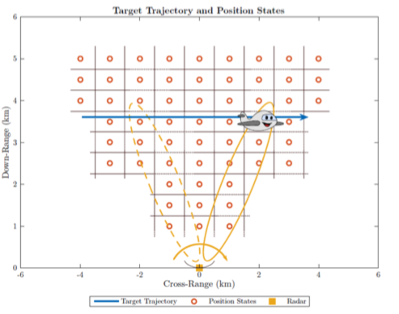
Advanced Scheduling of IEEE802.15.4e TSCH Wireless Networks
- With Prof. Hung-Yun Hsieh, TONIC Lab @ NTU, Sept.2014-Present
- Explore different metric of matching and coloring to achieve faster convergecast.[pdf link]
- Design cost balanced tree topology and implement multiple interface on the coordinator for achieve faster convergecast, parts of the work is in Publications.
- Ongoing, Allocate resource for retransmission to ensure reliability under lossy channel.[pdf link]
- Publication: IEEE ICCS 2016 as full paper(In press)
[paper],
[author list]
ICEECS post, [paper], [poster], [author list].
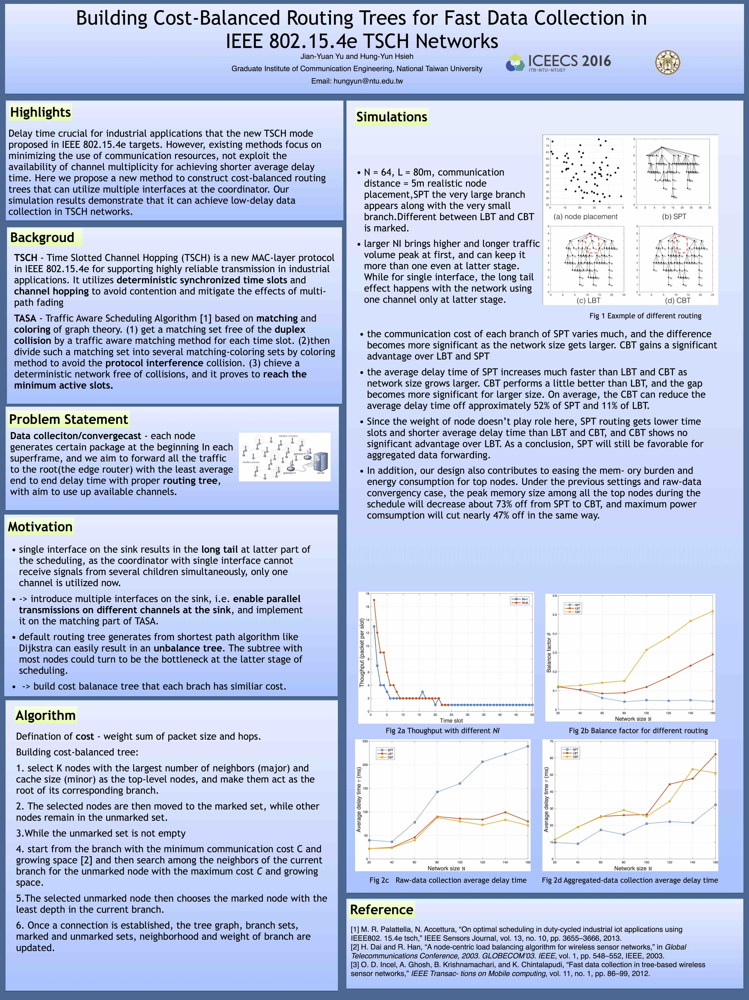
Implement NOMA-MIMO on TI Software Defined Radio
- With Prof. Hung-Yun Hsieh, TONIC Lab @ NTU, Sept.2014 - Dec.2014
- Survey about OFDM tech and hand on itpp library(in C++)[pdf link]
- Implement MIMO SIC on itpp [pdf link]
- Survey about SDR device to implent NOMA.[pdf link]
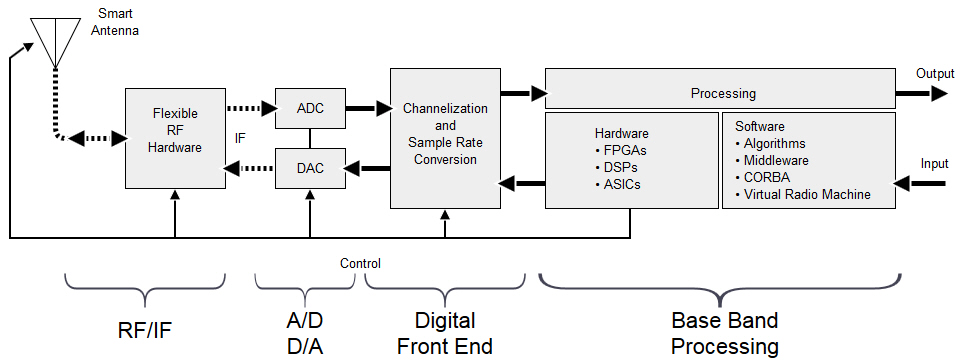
Design of GPS Signals Processing Simulator on MFC
- With Prof. Feng Liu, Radar Tech Lab @ BIT, Mar.2013-June.2013
- Work of B.S thesis, implement algorithms from the GPS standards on the MFC interface, including the basic part like modulation, error coding, synchronization adjustment and PLL, then show the plot figures with extensive toolkits under different settings. The work requires less hardware and computation cost compared to that of Matlab.
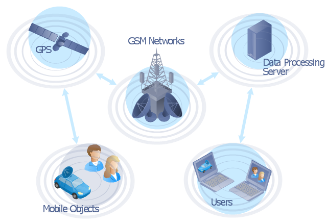
Projects
Obstacle Aviod Car with DQN in Unreal Engine & Airsim (2018)
DQN car with AirSim + Unreal Engine Simulator
- Final Project of EE5984 Robot Motion Control
- Result: [Yoututbe Link]
Implementatio nof a Tiny MIMO Communication System with USRPs (2017)
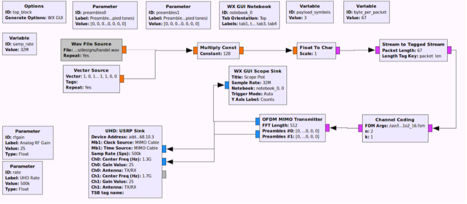
Implement 2X2 MIMO system on 4 Ettus N210 devices with GNU Radio Companion and some OOT programmings, able to successfully transmit text, image and audio.
- Result: [report]
SmartLight (2014)
Automatically switch on or off lights according to the user position in a house, implement on the TI Soc CC2530 with luminance sensor.
- Teamwork with Yi Zhang and Florent Maye.
- Result: [Yoututbe Link]
Hexo Blog (2018)
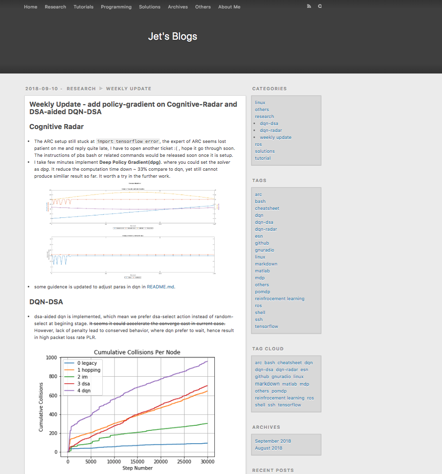
Ongoing updated Blog covering my technic solutions, research reflection based on hexo template, as well as a way to learn web language.
Simulations of DSRC protocol with NS3 (2015)
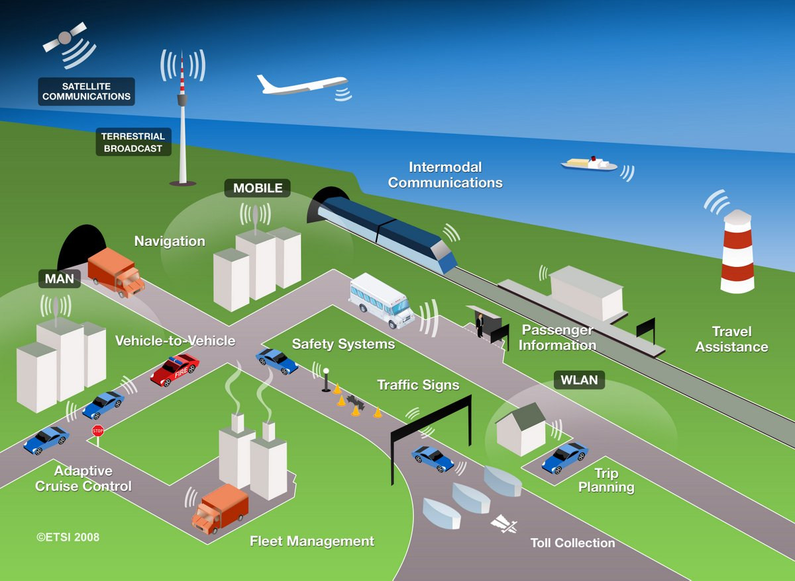
Analyze the performance of Dedicated Short Range Communication (DSRC) protocol with different Qos requirements or traffic pattern with NS3 simulator.
- Teamwork with Chun Hsiung Wang and Yun-Pu Wu.
- Result: [report]
Multiuser MIMO with LTE codebook precoder (2016)
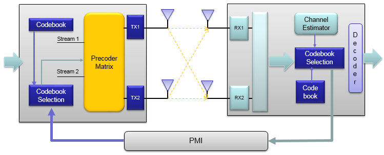
Propose precoding schemes like choosing eigen vectors, selecting PMI from LTE codebook to reduce the inter-beam interference, and find the effect of the channel correlation of different users.
- Teamwork with Ya-Han Lee and Jun Wang.
- Result: [report]
Cuisine Prediction from Recipe (2015)
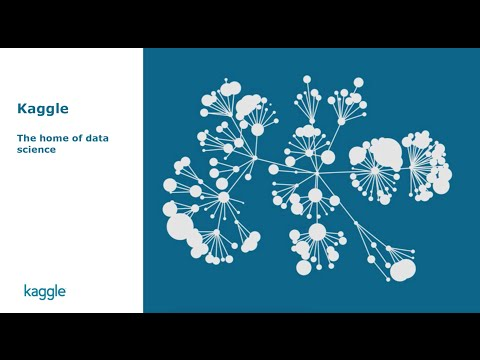
A classification problem on Kaggle, with a training dataset around 4kMB. Step by step trial with cosine similarity, PCA reduction, xgboost(extreme gradient boosting toolkit), item split, LDA and grid search method in R or python codes.
- Finally reach top 5% with 82% accuracy.
- Teamwork with Liyuan Hong and ZhengKang Lau.
- [slide]
Speech to Phonemes (2016)
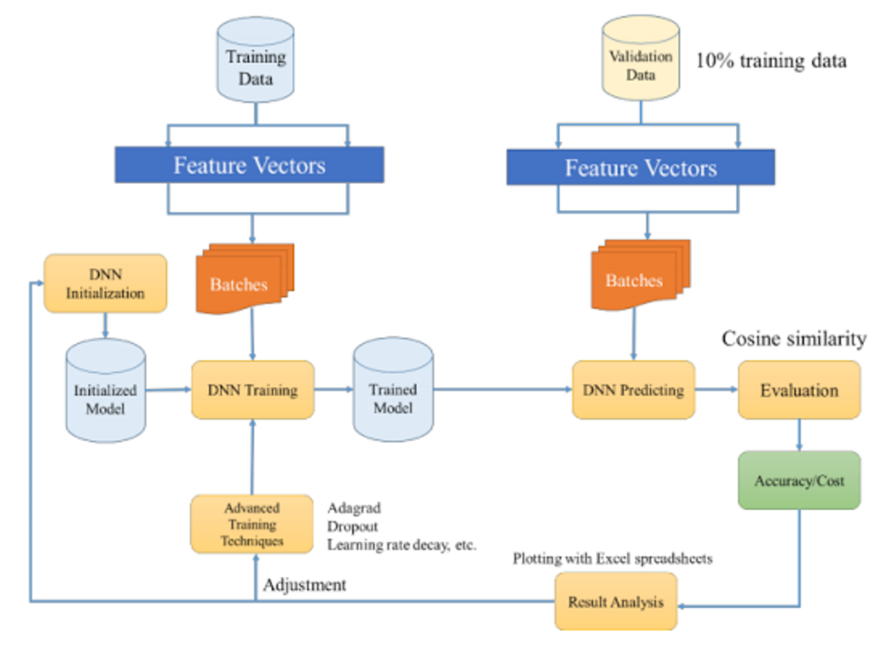
- DNN, with tricks like dropout, ReLU, epoch, active function selection.
- RNN, with tricks bi-direcntional, RMSPro, smoothing, trimming.
- Structure Learning, with HMM implement.
- Teamwork with Xing-Zuo Tsai and Ming-An Lee.
- Result: [report]
TouchScreen System on MCU (2012)
Individual work, a MCU system with touch screen as interface to control LED lights, stepper motors, temperature and light sensor. Mainly design to count the people in a building in real time, be selected for presentation.
- Individual Work.
Intern and Work
-
Teaching Assistant of EE4805 Senior Design Project @ Virginia Tech
- Instruct students to start a semester-long proposal, check the schedule and evaluation performances.
2018 Fall,
-
Teaching Assistant of EE2534 Microcontroller and Interfacing @ Virginia Tech
- Instruct students debugging or solve problems with their hand-on projects, which cover over 1000 lines of code/ 20 hour programming work by average.
- Help to design homework and labs by providing solutions and feedback individually.
2017 Fall, 2018 Spring
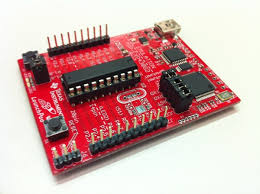
-
TONIC Lab(Mobile Networks and Wireless Communications (TONIC) Research Group) @ NTU
- The coordinator of network management and pbs(Portable Batch System) on CentOS, combined of around 50 computers.
- Resolve lab blog and accounts, ssh, git, software installation etc issue for linux machines.
Network Manager
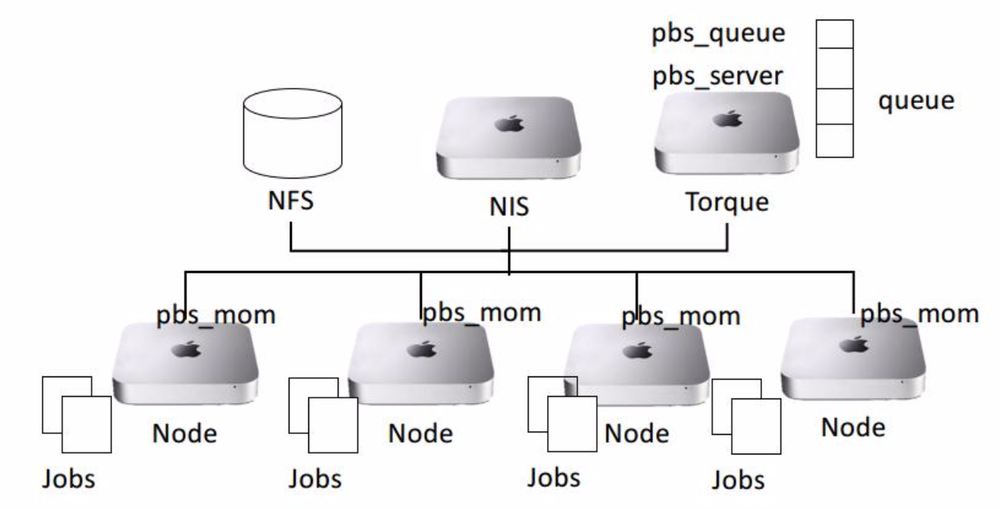
-
ZTE Corporation, Beijing
- Learning the standard of practice of WCDMA PTN debugging, and solve similar problem occurs in realistic networks.
Intern of Co-Exceed Consulting Dept, Sept. 2012
Activity
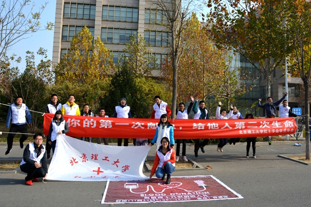
-
The Red Cross Association of BIT
- The coordinator of Blood Donation and Emergency Training for consectutive two years(2009,2010).
- Attract around 200 students, reported on campus news.
Honors
- 2013.7 Beijing College-student Electronics Design Contest 2012 - Broadband Automatic Gain Controller. A 8-hour marathon contest, quickly learn to operate the assigned unitslike ADC/DAC or amplifiers, design feedback control method and welding the circuit board, fail due to mistakes on installation of power unit.
- 2011.1 The Mathematical Contest in Modeling MCM2011
- 2009,2010 Experiment Class Scholarship
Skills
- Programming: Python, C/C++, Matlab, Shell, Java, Latex, HTML/CSS, Verilog, R, SQL.
- Toolkit #&38 Library：Tensorflow, Pytorch, GNU Radio, NS3, ITPP++, OPNET, OpenWSN, Android Studio, Xcode.
- Languages：Mandarin Chinese (Native), English (Fluent).
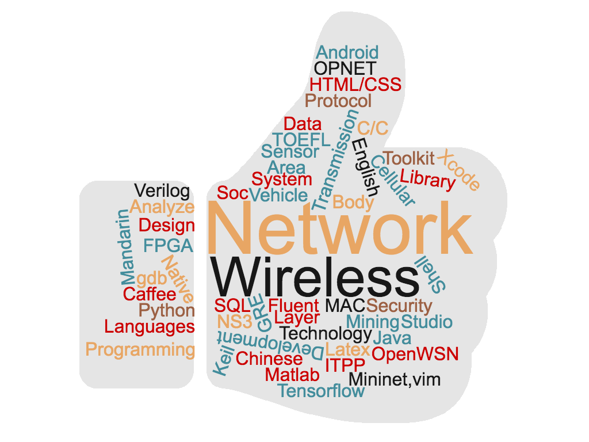
Hobbies
Gears Geek on Coding & Intelligent Games
Open source promoter, fast learner. Interest in solving tricky programming problems on LeetCode or online lesson
Also love to slove games likes cheese, Go(though no professional and unlikely win), sudoku, one-path in math way, along with many other iOS games.
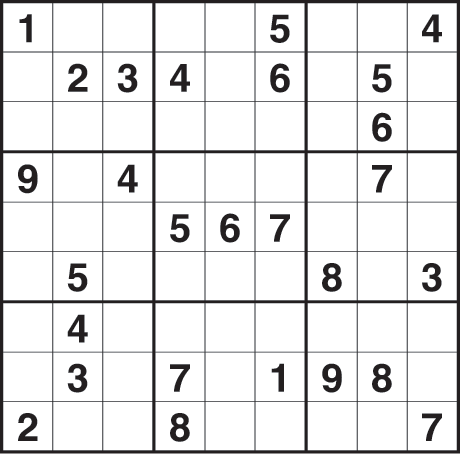
Sports
Energic Player，play SF/C in basketball, also can join in teamwork volleyball or bandmintion. Like to keepfit, running(especially in marathon) and swimming.
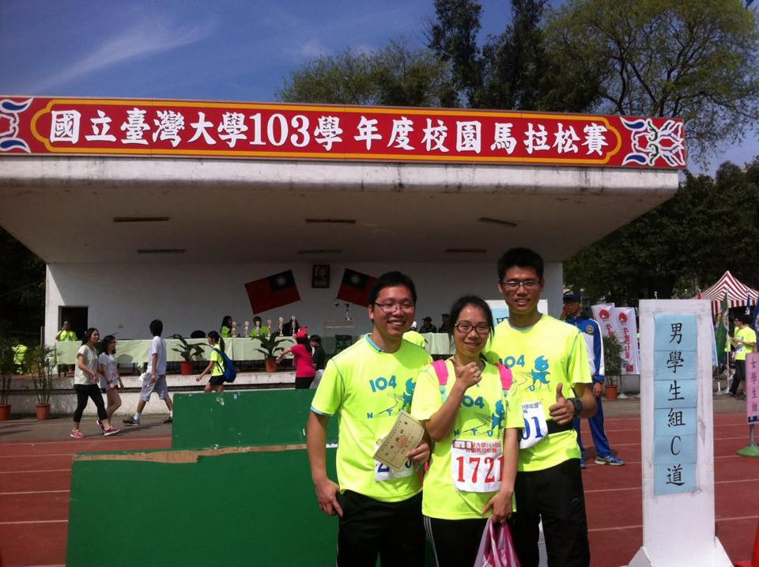
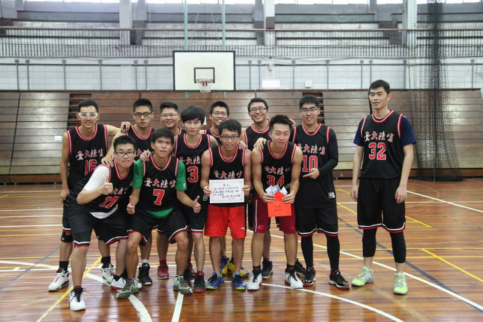
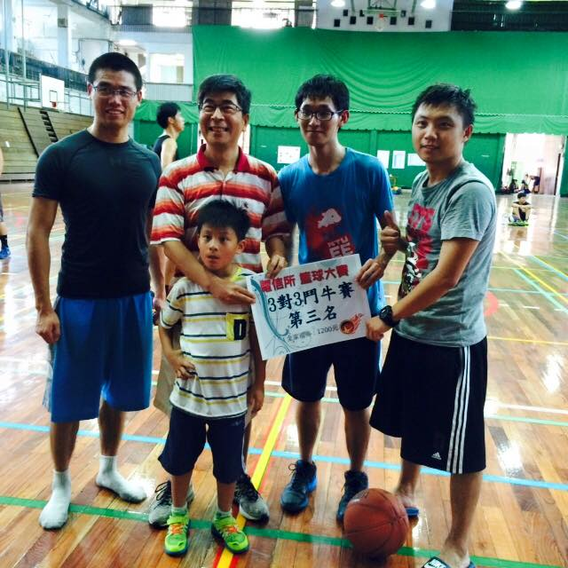
Camera Photography on Mobile Phone
loyal Instagram Instagram user，interested in views, animal, light, foods and so on.
Have travelled to most places in United States, China, Taiwan, and visit Singapore, Malaysia.
:: Views ::
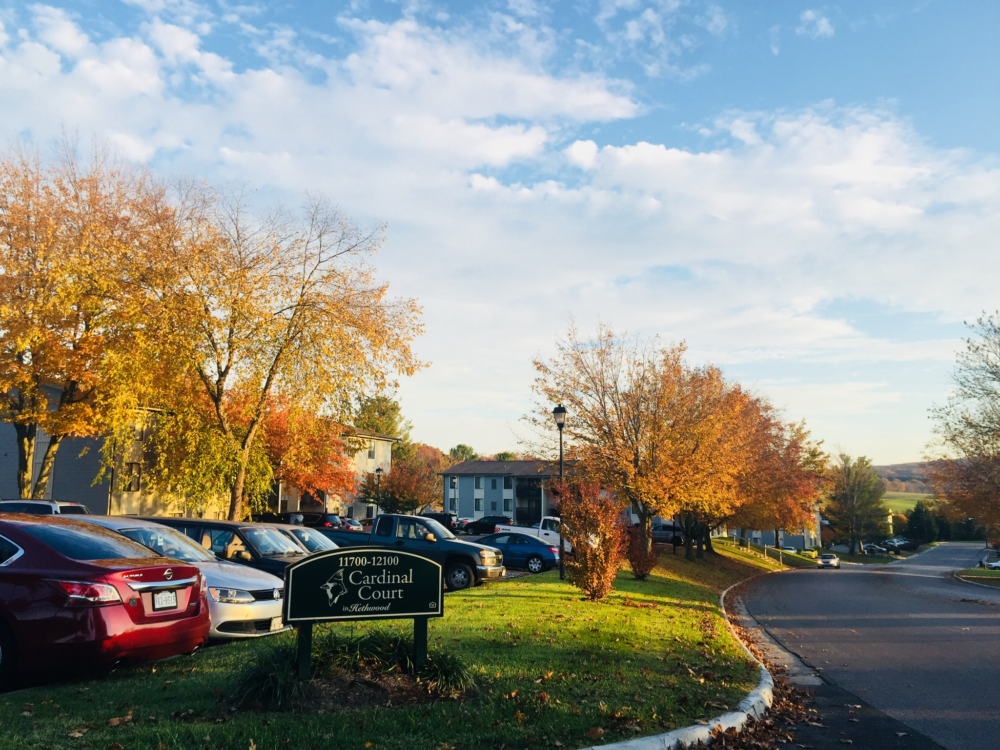
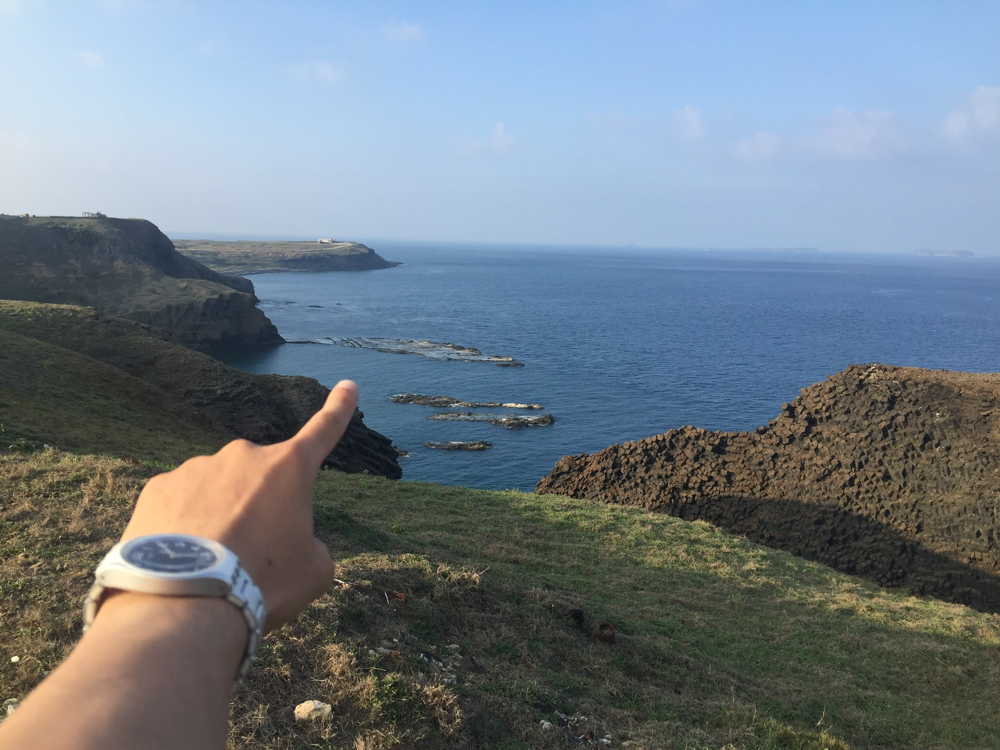